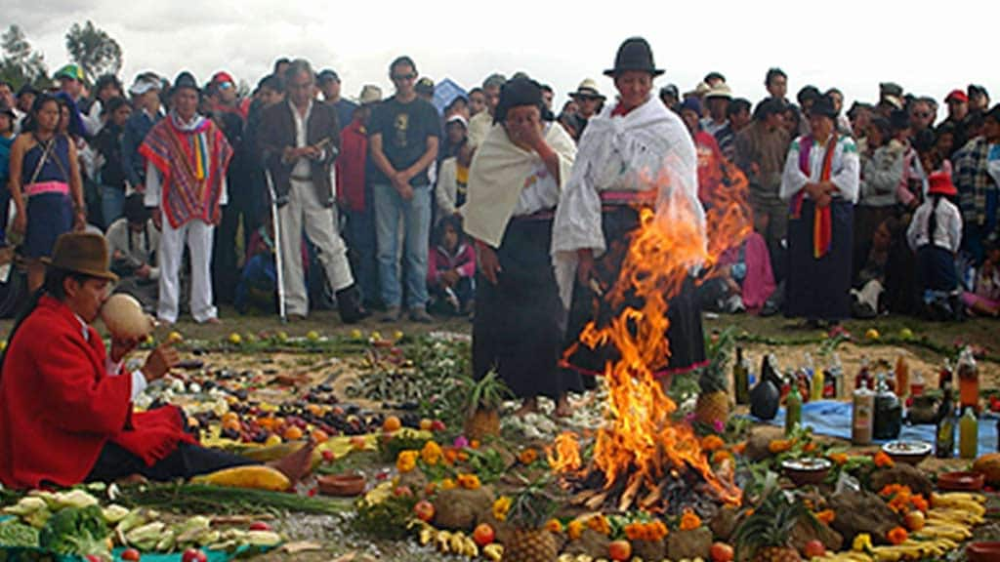
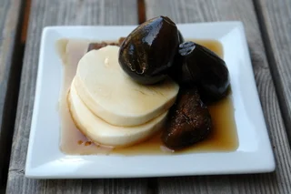
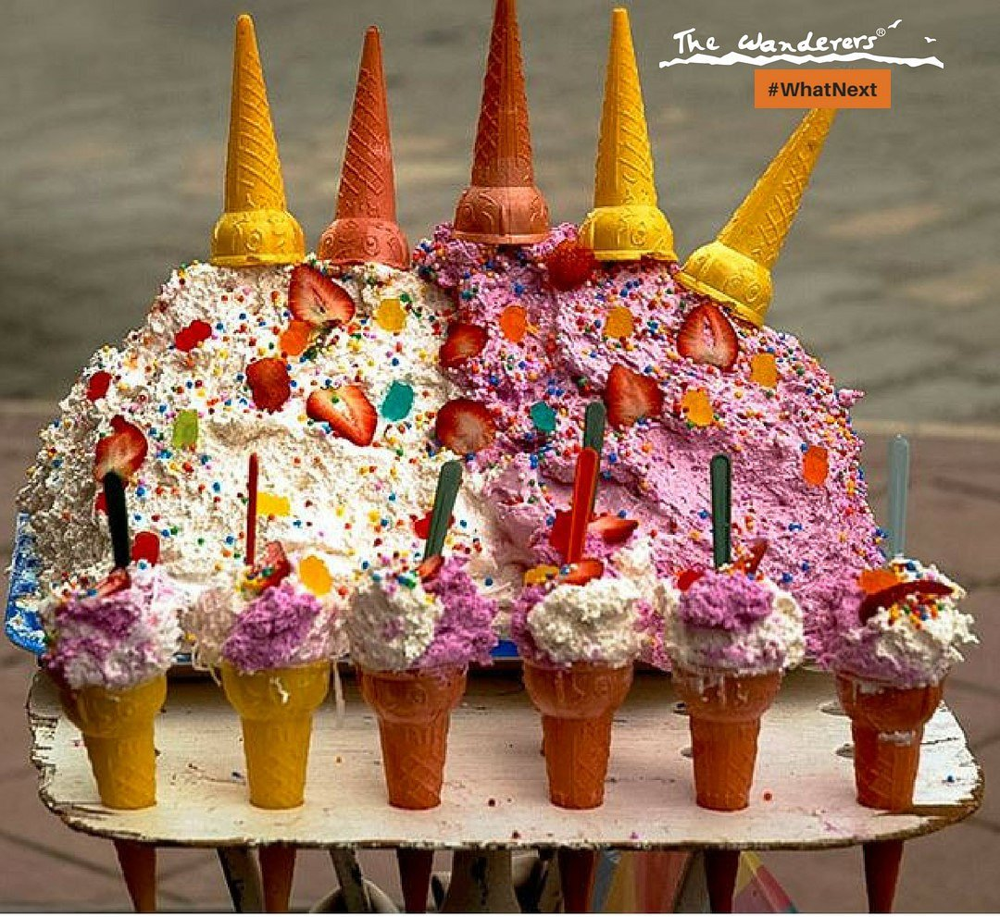
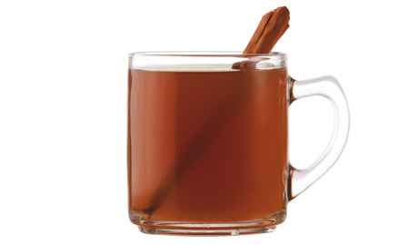
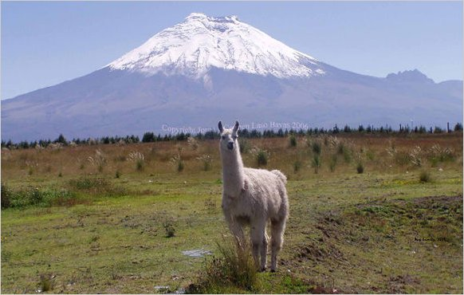
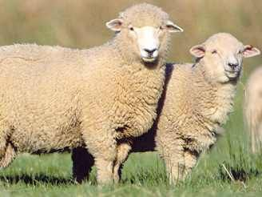
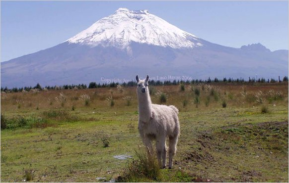
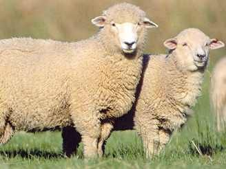
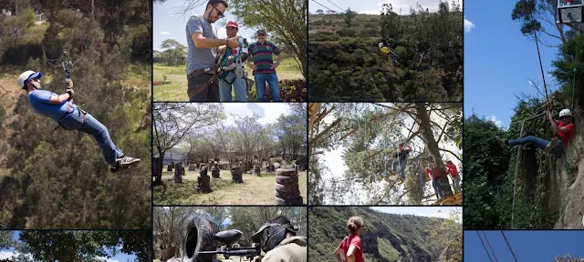
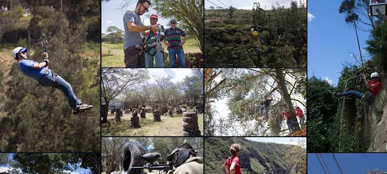

Sierra
La Sierra del Ecuador, también conocida como la región interandina, es una de las cuatro regiones geográficas del país (junto con la Costa, la Amazonía y la región Insular o Galápagos). Esta zona atraviesa el país de norte a sur y está compuesta por la cordillera de los Andes, lo que le da un relieve montañoso muy característico.

Ubicación y Geografía
Se extiende de norte a sur entre la cordillera Occidental y la cordillera Oriental de los Andes.En medio se encuentra una serie de valles y altiplanos conocidos como la Avenida de los Volcanes (término acuñado por el explorador Alexander von Humboldt) NAltitudes: varía desde los 1.800 hasta más de 6.000 metros sobre el nivel del mar (el Chimborazo, por ejemplo, es el punto más alto del Ecuador con 6.263 m.s.n.m. y el más cercano al espacio desde el centro de la Tierra).
- Azuay
- Bolivar
- Cañar
- Carchi
- Cotopaxi
- Chimborazo
- Loja
- Pichincha
- Tungurahua
- Imbabura
Principalwes cuidades de la sierra

Clima
Clima templado de montaña, aunque varía mucho con la altitud.En los valles interandinos, el clima suele ser templado y seco; en zonas altas puede haber páramos fríos y húmedos.Hay dos estaciones: lluviosa (octubre a mayo) y seca (junio a septiembre, aunque puede variar).
- Temperado seco
- Temporado semihumedo
- Temperado humedo
- Frio humedo de alta montaña
- Glacial gelido
Sus temperaturas segun la zona donde se encuentre

Economia
a economía de la región Sierra de Ecuador se basa en la agricultura, la ganadería y el turismo, con actividades industriales como la agroalimentaria (lácteos, embutidos) y la manufactura de artesanías (joyería, cerámica, muebles). También destaca la producción de flores para exportación y recursos mineros.
- Agricultura: papa, maíz, cebada, hortalizas, flores de exportación.
- Ganadería: vacas, ovejas y alpacas.
- Artesanías: textiles, cerámica, bordados, sombreros.
- Turismo: histórico, cultural, ecológico y de aventura.
- Inti Raymi (fiesta del sol, en junio)
-
La Mama Negra (Latacunga)
La Fiesta de la Mama Negra se celebra en Latacunga, en la Sierra ecuatoriana, y es un festival multicultural que fusiona tradiciones indígenas, españolas y africanas. Originalmente un homenaje a la Virgen de la Merced, se realiza dos veces al año: en septiembre por motivos religiosos y en noviembre conmemorando la independencia de la ciudad. La celebración se caracteriza por coloridos desfiles con personajes como la Mama Negra, el Ángel de la Estrella y los Huacos, además de música folclórica y danzas.

-
Pawkar Raymi (fiesta del florecimiento)
El Pawkar Raymi es una celebración ancestral en la sierra de Ecuador que conmemora el florecimiento y agradece a la Pachamama por la cosecha, coincidiendo con el equinoccio de marzo. Esta festividad, también llamada "fiesta del florecimiento" o "fiesta de los muchos colores" por la abundancia de la cosecha y la alegría, marca un nuevo ciclo agrícola y se celebra con rituales, música, danzas y comidas tradicionales.
 - Carnavales andinos
-
Yapingachos
Tortillas de papa rellenas de queso, doradas en sartén. Acompañadas con chorizo, huevo frito, aguacate, curtido de cebolla y salsa de maní -
Hornado
Cerdo horneado lentamente hasta quedar crujiente por fuera y suave por dentro. Se sirve con mote (maíz pelado), llapingacho, plátano maduro y ensalada. -
Choclo con queso
Mazorca de maíz tierno cocido, servida con queso fresco y a veces con habas Muy común como refrigerio o comida ligera.
-
Fritada
Carne de cerdo cocinada en su propia grasa con ajo, cebolla y especias. Se sirve con mote, maduro frito, tortillas de papa y ensalada.
-
Caldo de gallina criolla
Sopa preparada con gallina de campo, papas, yuca, maíz y especias. Plato muy nutritivo y popular en el desayuno o almuerzo.
-
Mote pillo
Motei refrito con huevo, cebolla y achiote. Tradicional en la provincia de Azuay (Cuenca y alrededores).
-
Pan de Ambato
Muy famoso en todo el país.
-
Higos con queso
higos cocidos en miel de panela, servidos con queso fresco.  -
Espumilla
postre hecho con claras de huevo batidas, azúcar y fruta (como guayaba).  -
Chicha de jora
bebida fermentada de maíz.
-
Canelazo
bebida caliente hecha con aguardiente, canela y naranjilla.  -
Colada morada
bebida espesa de frutas y maíz morado, típica del Día de los Difuntos.


 





 

Cultura y Tradicines
La cultura y tradiciones de la Sierra ecuatoriana se caracterizan por una fusión de raíces indígenas y herencia colonial, celebradas en festividades coloridas como la Diablada de Píllaro y la Mama Negra.
Festividades como
El Inti Raymi en la sierra es una fiesta andina ancestral que celebra el solsticio de invierno, marcada por rituales, danzas y música en honor al dios Sol (Inti) y la gratitud por las cosechas.

Los carnavales andinos de la sierra de Ecuador combinan tradiciones indígenas y mestizas con celebraciones más contemporáneas. Lugares como Guaranda, famosa por su "Taita Carnaval" y el licor "pájaro azul", y Ambato, con su "Fiesta de las Flores y las Frutas", son emblemáticos. Otras comunidades celebran el Pawkar Raymi, una fiesta ancestral que agradece a la Pachamama por las cosechas, con desfiles y danzas. Las celebraciones incluyen juegos con agua y harina en algunas zonas, y desfiles con carros alegóricos y comparsas en otras.

Gastronomia de la Sierra
La Sierra del Ecuador tiene una gastronomía rica y variada, influenciada por la cultura indígena andina y la cocina mestiza. , y productos lácteos, además de una gran variedad de especias y hierbas.


Dulces- panes-tipicos y bebidas
Algunos panes y bebidas dulces tradicionales de la sierra ecuatoriana son el morocho, una bebida espesa a base de maíz, y los pristiños y buñuelos, que son dulces fritos que se sirven con miel de panela. Otras bebidas populares incluyen el canelazo, una bebida caliente a base de canela y aguardiente, y la horchata lojana, hecha con hierbas y flores. En cuanto a dulces, destacan las colaciones y la espumilla, así como la "caca de perro" (maíz tostado con panela).